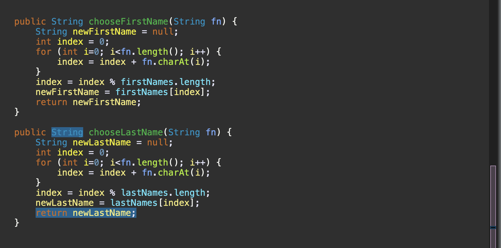
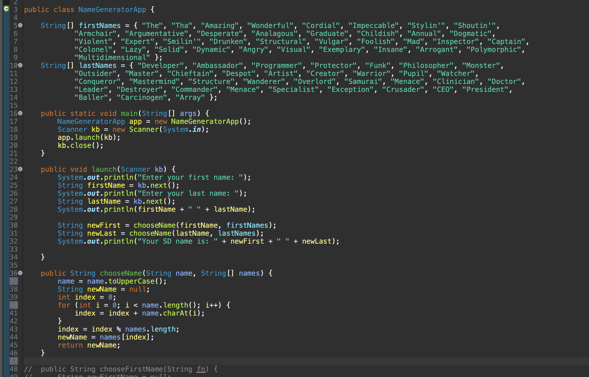
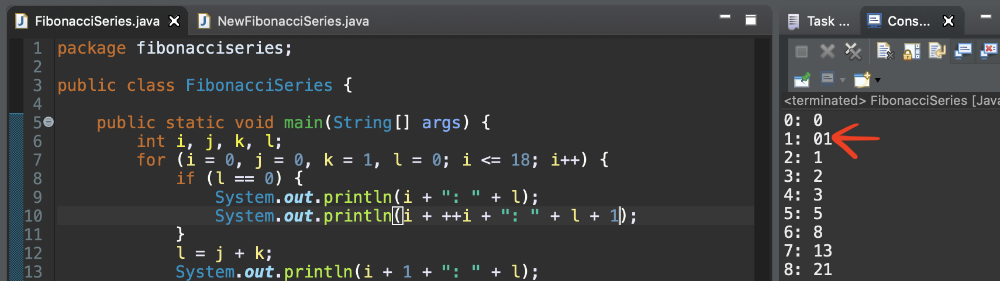
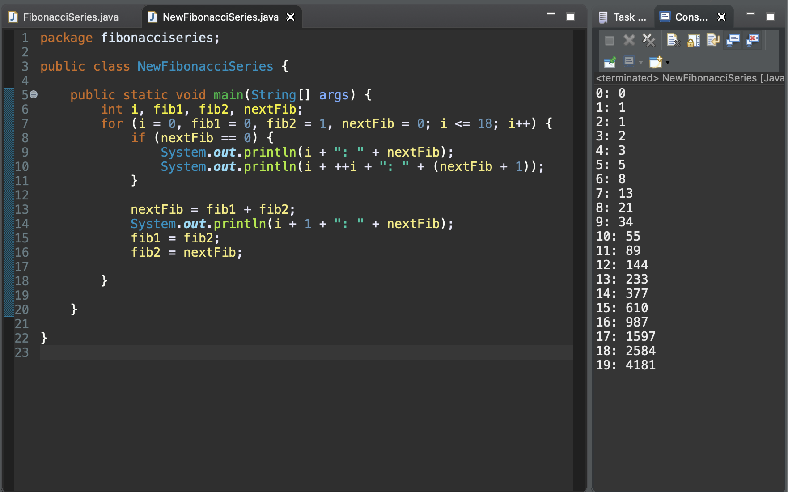

For better or worse, I have decided to scale back my daily posts—not that my posts were ever wildly long or anywhere near the length of my essays during graduate school. But I want to do this the proper way. I need to gain some proficiency at writing on this topic and until I can properly update this website to better format code snippets, quoted text, and citations, I do not want to just post sloppy writing on heavy topics, so I can look back and say I posted everyday. Right now this website is crude and doesn't leave much room to properly writing quality content in the format or standard that I expect. But my plan was to post daily, and I want to stick to that plan. And given the nature of this bootcamp, i.e. drinking from the firehose, + math + studying for the OCA + family + exercise + sleep, that doesn't leave much time for writing, let alone quality writing with proper research, citations, reflection, drafting and so on and so forth. Ah how I miss those 'uncomplicated' days in graduate school. I will still be posting some 'quality' content; however, the long form will have to be sprinkled in between shorter daily posts, which will mostly be reflections on course content and insights on my own personal navigation through a new industry. Hopefully, I can become more efficient at writing on this field. I think in due time I will be able to produce better content in a short time frame and hopefully make up the difference. Until then—Always Be Coding! 26 September 2019
Today marked the beginning of Week 3 at Skill Distillery. Week 3! The days are going by too fast. I feel like I blinked and two weeks passed. Cliche, I know but true. Time really started getting away from me last Wednesday after attending a job fair at Denver Startup Week and slipped farther away by week's end. The fair was my first "introduction" to the tech job market. It was interesting to say the least. I’ve never been to a job fair quite like this one. They had DJ’s spinning records on each floor, free food and drinks, and plenty of swag to give away. The place was packed and moving around felt similar to navigating a sea of bodies in a crowded bar. It definitely seemed to be more of a social outing than a job fair but fun nevertheless. Then the proverbial ‘firehose’ was turned up another notch with our introduction to Object Oriented Programming (OOP). I regret not blogging last week but decided that the extra hours were better spent on studying instead of maintaining the blog. But it’s a new week, and everything is back in order.
Over the weekend, we were required to develop a food truck rating application. It’s a very simple program, but it helped to solidify the first few building blocks of Java. We use an acronym to help remember the four pillars of Object Oriented Programming, and that acronym is: A PIE or Abstraction, Polymorphism, Inheritance, and Encapsulation. We barely touched Inheritance and Polymorphism by Friday, so our homework mainly focused on Abstraction and Encapsulation. The biggest takeaway from the exercise was on the importance of using Encapsulation to hide internal state and requiring interactions to be performed through an object's methods. The exercise also helped me develop a greater appreciation for Encapsulation. I can certainly see the significance of using Encapsulation for real world applications. If you would like to read more on my lessons learned or view the code, please visit my project's page on github.
But more on Abstraction, Polymorphism, Inheritance, and Encapsulation later. I plan to break down each concept into its own post over the course of this week. I will also be incorporating study material on topics from our preparation for the Oracle Certified Associate exam on Week 7. We do not officially begin in-class OCA exam preparation for two more weeks, but I am beginning my own study plans tonight by reading through Oracle’s Java® Language Specification guide, along with working my way through their tutorials. And speaking of study plans—it’s time to get busy.
Always Be Coding! 23 September 2019
You hear it all the time: “Don’t Repeat Yourself!” But when we are first learning to code, repetition is key. We need to write the same types of code dozens and dozens if not hundreds and thousands of times. We need to practice our if statements and for loops. We need to skip the enhanced for loops until the “old fashioned” for loops are second nature. We need to type each character of “System.out.println( );” and “public static void main(String[] args)” until our dreams start in the ‘main’. Get WET! Write Everything Twice. Or better yet, Write Everything a Thousand Times-WETT! I know I need the practice. We should all get WET before we decide it’s time to get DRY.
Breaking your code is important, too. It’s how we learn best. I don’t think there should be any shame in “failing”. Failing is precisely how we learn. If it was easy, chances are you didn’t learn much at all.
But with all that said, eventually, we should learn to refactor our code. We should clean house a bit. In just over a week at Skill Distillery, the instructors have already shown us how to recognize code that has too much repetition. Today we refactored a portion of our code to make it DRY, and I would like to share that example with you.
In the image below, you will find two methods taken from a name generator. The first method generates a new first name from an array of names based on characters in the user’s name. The second method does virtually the same exact thing but has a few different variable names and iterates over a different array.
Given the almost identical behavior of these two methods, we can make a strong case for using DRY in this instance. Below you will find the refactored code. We combined methods to make one single method called “chooseName” which takes two parameters. We pass in either the user’s first name or last name, along with the appropriate array needed to generate a new name instead of separating the two methods and performing the same work.
Today was a prime example of getting WET before you get DRY. We wrote the same method twice, then refactored it into a single method. But learning how to write methods and learning how to recognize WET code was purposely built into our lesson today, and I’m a better developer because of it.
ABC! 17 September 2019
Week 1 at Skill Distillery officially ended yesterday at 15:27 MDT when I pushed my final commit up to Github. Every weekend we are tasked with completing an independent project and pushing it to a repository for grading. We receive either a 1 or 0. You get a 1 if you complete all of the task items for the project and everything works properly, or a 0 if your code does not meet all the standard.
If you would like to check out my first project, please head over to this repository. Feel free to comment on Github or ask any questions.
Side note: I know this blog’s functionality is lacking. Currently working on a local copy and should be ready for upload soon.
ABC—Always Be Coding! 15 September 2019
It’s amazing how much you can learn from a full day of coding in the classroom, and I am not referring to a two hour college course. Our bootcamp is an 8-to-9 hour day of learning and coding—and that does not include an hour for lunch. Skill Distillery was definitely the right choice. The instructors are industry veterans with decades of experience and knowledge. Old school programmers who aren't teaching you how to be a "package programmer", i.e. just download everything from npm and slapped it together. Don't get me wrong; npm can be a great resource but programming is so much more. You need to know the fundamentals first. You should know how the hardware stores data into memory and the limits of primitives. It's so important to know that a byte holding a value of 127 will flip to -128 if you try to increment it one more time, or that an integer will do the same when it reaches a value of 2,147,483,647. Try adding 1 to that value and Java will give you -2147483648. Knowing binary and how to count in binary is also vital to your success. Spending 8 hours on Numerial Systems and Data Types in Java brought much needed clarity to my own development as a programmer, and we only scratched the surface.
After today, yesterday’s code looks so ugly, as well. On one hand, I’m happy that we managed to produce a working program without using any outside resources, i.e. stack overflow or google. But on the other hand, just look at the code in yesterday’s post and then look at the image directly below. Our first attempt at Fibonnaci Series looks atrocious. It seems so simple in hindsight. But I guess that’s part of the learning process.
Note: we were advised to rewrite Fibonacci Series, along with other algorithms, many times over the next four months and beyond. Simply sit down and rewrite each program without referring to any old versions or outside resources. I think this will be great practice.
Below you will find a much cleaner and more succinct version of the Fibonacci Series with a simple iterative algorithm. The code below was produced in class by our instructor.
ABC—Always Be Coding! 13 September 2019
At Skill Distillery, we end our day with pair programming. If you’re unfamiliar with pair programming, one person is the “driver” who types the code while the other “navigator” plots the course through the code. We are typically given two or three labs to complete with a random partner.
Today we were tasked with FizzBuzz and Fibonacci Series. After 8 hours of coding, everyone was pretty fried. But we all pushed on. My partner and I sat down and cruised through FizzBuzz but had to break out the whiteboard for Fibonacci. We had to complete it without using recursion. I was vaguely familiar with recursion—meaning I had seen an example of someone else solving Fibonacci Series with recursion on stack overflow. But I had long forgotten how to even write the method. So, we were left to our own fried brains on figuring out how to find an iterative algorithm that would print the first 20 numbers in the Fibonnaci Series, and just to make it more interesting, we had to modify our solution to print out the sequence numbers next to the fibonacci value.
Below you will find an image of our program from today’s class. On the right side of the image you will find the output. The number on the left is the sequence number and fibonacci is on the right. It is definitely not the most efficient solution but it gets the job done. Farther down I will explain a few lines that stood out during our exercise and then rewrite a few lines so it's easier to understand.
If this concept is completely new to you, the Fibonacci Series is formed by adding the last two numbers to create the next number in the
series. The series starts with 0 and 1. So, the third Fibonacci number is (0 + 1) = 1. The next is (1 + 1) = 2. Then (1 + 2) = 3 and so on.
0, 1, 1, 2, 3, 5, 8, 13, 21, 34, 55, 89, 144, 233, 377, 610, 987, 1597, 2584, 4181, 6765…
In the image above, the first two print statements on lines 9 and 10, simply print the sequence numbers 0 and 1 and the fibonacci numbers 0 and 1. On line 10, we had to add a pre-increment to i to keep the sequence formatting in order since we would only be looping through the if statement once.
Next we ran into a problem that had been mentioned during class but quickly forgotten among the vast amount of information given over the week. This is an intense bootcamp and the firehose analogy rings true. Our problem was on the same line 10. L + 1 was concatenating like a string (see below). We recognized the concatenation right away but had to be reminded about the reason behind the behavior. So, if you’re new to programming, it’s because Java reads the print statement from left to right and when it encounters a String it interprets the integers following the String as more of the same. Weird, right? So, you need to remind Java that you’re still treating integers as integers by putting them into parentheses.
Admittedly, our name selection on the integers was not the best. Instead of J, K, and L, we should have called them fib1, fib2, and nextfib. If you remember, we are adding the last two fibonacci numbers in order to get the next fibonacci number. I have rewritten the code to reflect the changes. Eventually I’ll write this all into a method that takes user input and share those changes as well.
Now that we have renamed the integers and it’s easier to read, let’s quickly go over the few lines that writes this series.
As stated above, we get the next fibonacci number by adding the last two fibonacci numbers. Line 13 does this by assigning the sum of fib1 and fib2 to nextFib. That is the meat of this process but the real magic is on line 15 and 16 after printing out nextFib on line 14.
Note: the i + 1 on line 14 is there just to keep the sequence count in order.
Line 14 executes and prints 2: 1. Then we reassign variables on 15 and 16.
So when lines 15 and 16 execute for the first time fib1 is equal to 1, fib2 is equal to 1, and nextFib is equal to 1.
We enter the loop again at line 7, Java checks the if and its value is false, so it moves down to line 11 and runs the code. Now nextFib equals 2 because that’s the current sum fib1 + fib2. Remember Java assigns the value of everything to the right of the equal sign to the variable on the left.
Program prints 3: 2 and moves back down to 15 and 16.
Now fib1 equals 1 because fib2’s value was still 1. But fib2 now equals 2 because it was assigned the value of nextFib.
The code runs back up to the top of the loop, iterates i, checks the IF statement which will always be false, falls through the IF statement back down to line 11 and runs the code again.
Now fib1 + fib2 equals 3, so nextFib is now 3. We print out 4: 3 and run lines 15 and 16 again.
fib1 gets fib2’s value of 2. fib2 gets the value of 3 from nextFib and it’s back to the top of the loop again. Integer i iterates, and it fall through the IF down to line 13 again. 2 + 3 is 5, so nextFib is now 5 and 5: 5 is printed.
fib1 gets the value of 3 from fib2 and fib2 takes the value of 5 from nextFib.
This is process happens over and over until our exit condition is complete. Hope this explanation helps! If you would like to step through this code line by line so you watch it execute, please head to over to this Java Tutor by pythontutor.com. Shoot me an email if you have a question or any feedback. Happy coding! 12 September 2019
It’s 23:20 as I type this blog. If you’re unfamiliar with “military” time like most Americans, 23:20 is simply 11:20pm. Europeans and I assume virtually everyone else around the world are familiar with the 24 hour clock. It’s not “military” time in other countries but rather the hours of the day. The reasons behind our decision to start the count over after noon is another article altogether.
There is no confusion with the 24 hour clock—if you are acquainted with it. After 12 noon, you simply continue counting: 13, 14, and so on. Moreover, if you are used to the 24 hour clock, having to deal with AM and PM can be even more confusing. You don’t have to ask your friend to clarify, “did you mean that you want to meet at 9am or 9pm?” It is 9 or 21. It is simple and it’s clear—just like a ternary conditional operator.
booleanExpression ? valueIfTrue : valueIfFalse
Yes, I rolled an intro on the 24 hour clock into the much debated ternary conditional operator. But I feel like the they are similar. If you’re not familiar with using a 24 hour clock, it can be confusing. You have to start doing all the math in your head to figure out that 21 is really 9pm. You are not accustomed to associating 21 with your nightly routine or your favorite sitcom. It’s unfamiliar and confusing just like a ternary operator to someone who rarely uses it or comes across it in their daily work.
But I like it. It’s simple and elegant. But if overused, it can genuinely be confusing and hard to debug. For short expressions or to bring much needed clarity to a short IF/ELSE, I say go for the ternary operator. Embrace it early in your learning, and it won’t feel so clumsy later in your career—like a 24 hour clock. 11 September 2019
My hat is off to all the full time bloggers. It's tough to write quality content, especially quality content that people actually want to read. I've been trying to come up with a topic all day. Once again, it’s 10:40pm and all you get is a blog post about my lack of creativity on creating a blog post. I would prefer to write a well thought out and thoroughly researched post related to today’s activities in class, but we are still reviewing java fundamentals and posts on fundamentals are a dime a dozen. Nevertheless, I will leave you with a short (and I mean short) reminder on IF/ELSE vs ELSE IF statements just in case someone new to programming has somehow-miraculously-found their way to this blog.
In the first image above, there are two IF statements followed by an ELSE. The program evaluates the first IF statement, finds it to be true, then executes the code inside the curly brackets. It then moves on to check the next IF statement, finds it to be false and moves down to the ELSE and executes the code inside the ELSE statement. This happens because the ELSE statement associated with the previous IF statement and only the previous IF statement.
In the example above, the desired outcome was to evaluate the salary and only print one of the statements. Preferably, we would like the last print line NOT to execute, especially if the salary was $10,000 above our highest desired salary. If you were hoping to execute one statement and one statement only, then we need to change the second conditional to an ELSE IF statement, as shown in the image below. This will execute only one statement. Of course, there is a path to not print any statement at all. Can you find it? Someday soon I’ll have the ability to take comments but for now try finding it on your own. It’s easy. 10 September 2019
Day 1 is officially over. It's nearly midnight (10:24pm to be exact), and I've been up since 6 this morning. If this was any other line of work, I'd probably be exhausted. But I'm not even tired. In fact, I'm excited and already looking forward to class in the morning. Granted I will probably have to switch my blogging times to the morning or midday because trying to squeeze in a recap on the day while your two year old daughter is slamming her baby shark toy against the coffee table just doesn't work. But I love little noise machine.
Overall, today was probably the easiest day of the course. The instructors made it clear that each day will get progressively harder going forward. Skill Distillery may in fact be the most intense bootcamp out there, especially for enterprise developers. Five weeks from now, we will be taking four prep tests to gauge our ability to sit for Oracle's OCP exam. I'm told that's equivalent to cramming 2-3 years of programming into 5 weeks. Firehose, anyone? But that's exciting to me and more proof that I'm on the right path.
So, first day is done, and so is this blog post. I don't plan to continue in this fashion but wanted to stick to the plan: at least one git push to the blog daily, even if it's only a small update. I'd like to start writing more technical posts, but I will do that once I finish setting up this blog to post a little more dynamically. 9 September 2019
© 2019 Richard Newman